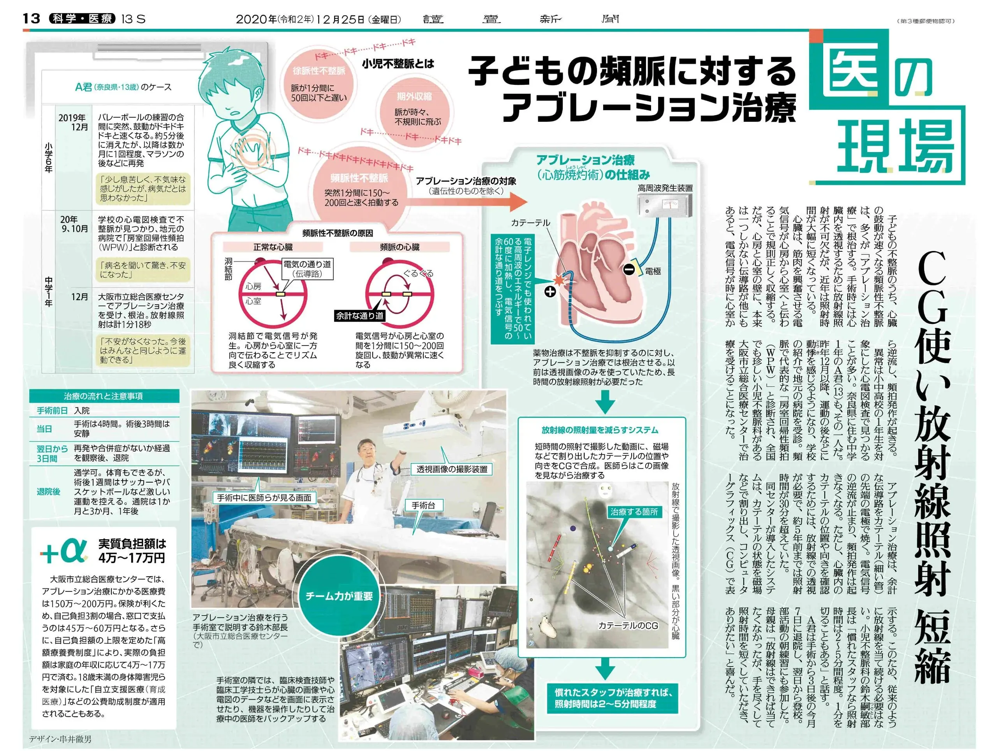
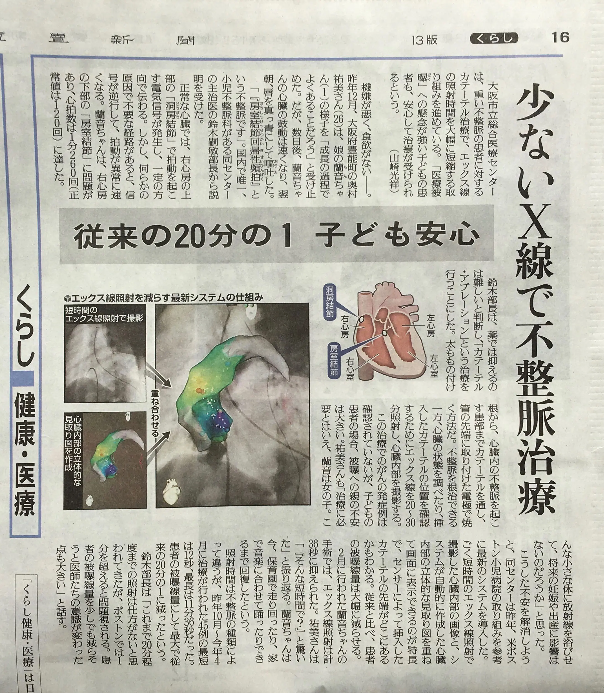
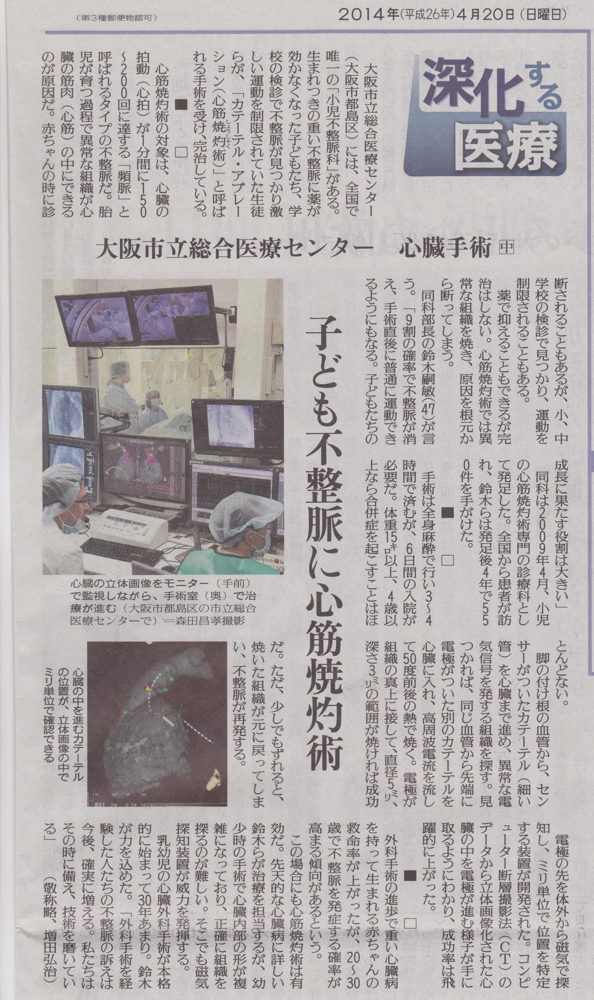
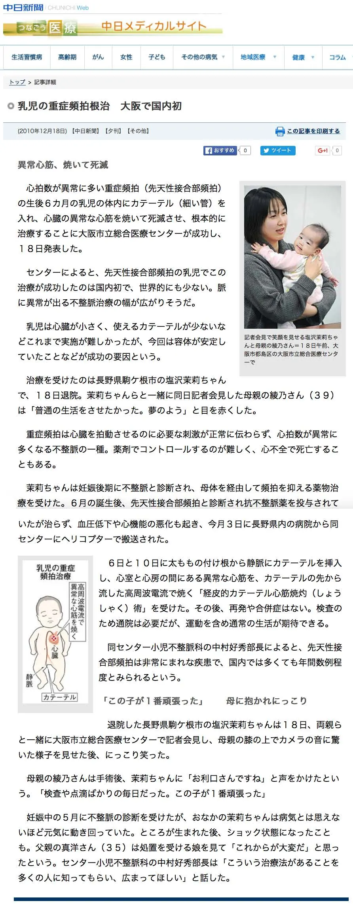
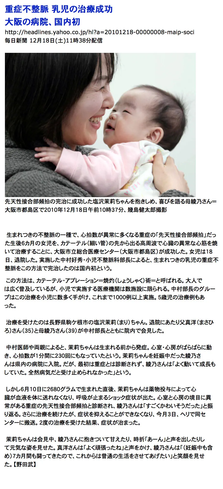
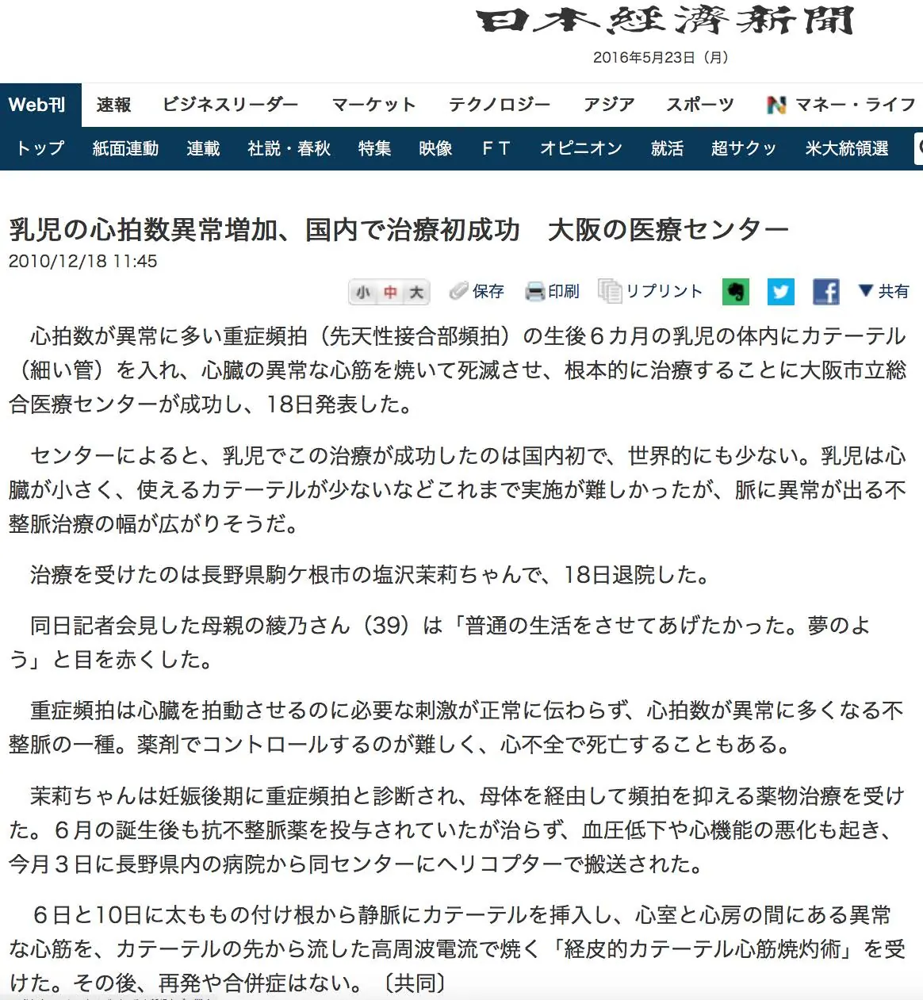

TV news
December 2010 · about 2 min 20 s Original video file

Press & TV
Newspaper articles and TV news about our care for children with arrhythmias. All articles are in Japanese. Press "Enlarge the article" to read them at full size.
Scroll

From the series "Iryo no Genba" (Medicine on site). The article introduces treatment that uses computer graphics to shorten X-ray exposure time.
1 / 6Scroll to the next article ↓

"One-twentieth of the previous dose, a relief for children." The article introduces a new system that reduces X-ray exposure.
2 / 6Scroll to the next article ↓

Osaka City General Hospital, Heart Surgery (part 2). The article introduces the only Department of Pediatric Electrophysiology in Japan.
3 / 6Scroll to the next article ↓
December 18, 2010
We held a press conference on catheter ablation for congenital junctional ectopic tachycardia in a 6-month-old infant, and it was reported by many news outlets. It was the first successful case of this treatment in an infant in Japan.

4 / 6Scroll to the next article ↓

5 / 6Scroll to the next article ↓

6 / 6Scroll to the TV news ↓
Television
News coverage of the press conference in December 2010 (in Japanese). The video loads when you press play.
December 2010 · about 2 min 20 s Original video file
December 2010 · about 1 min 52 s Original video file